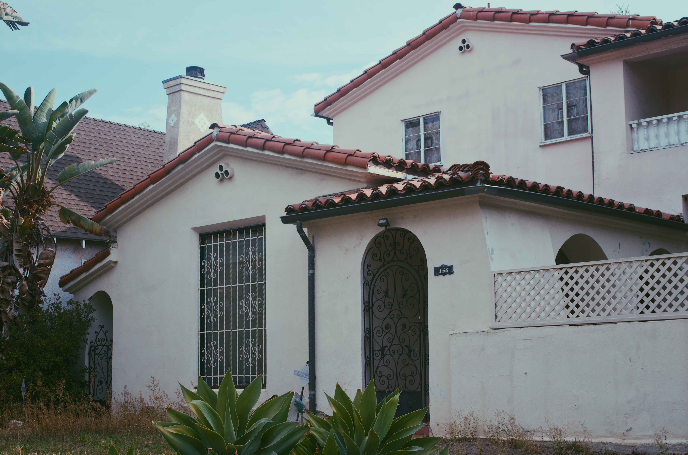
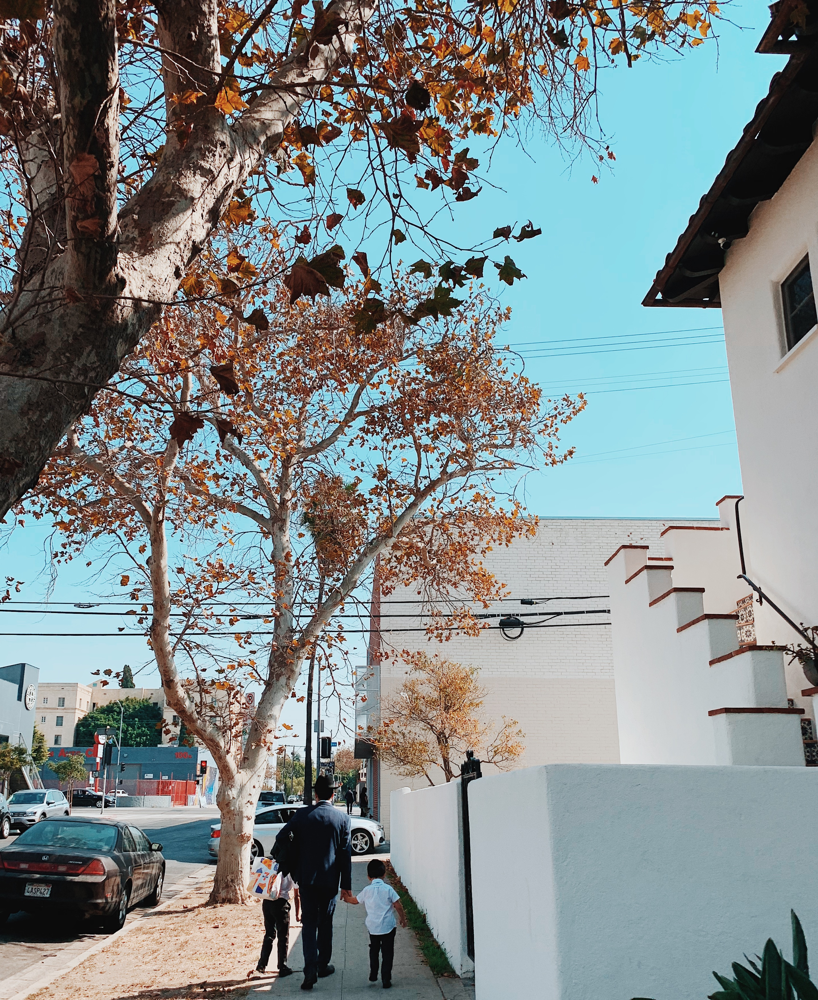
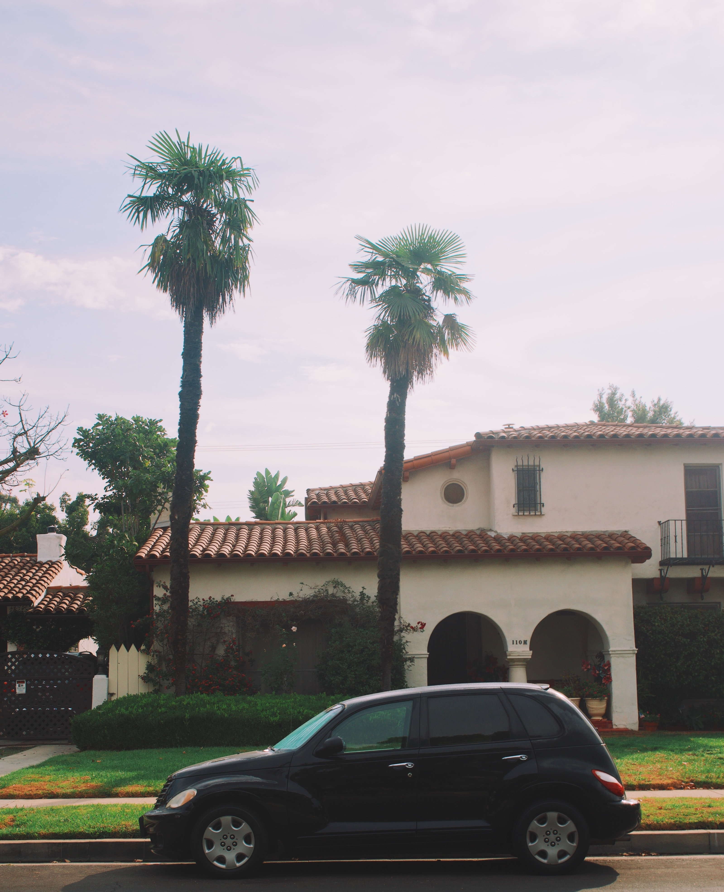
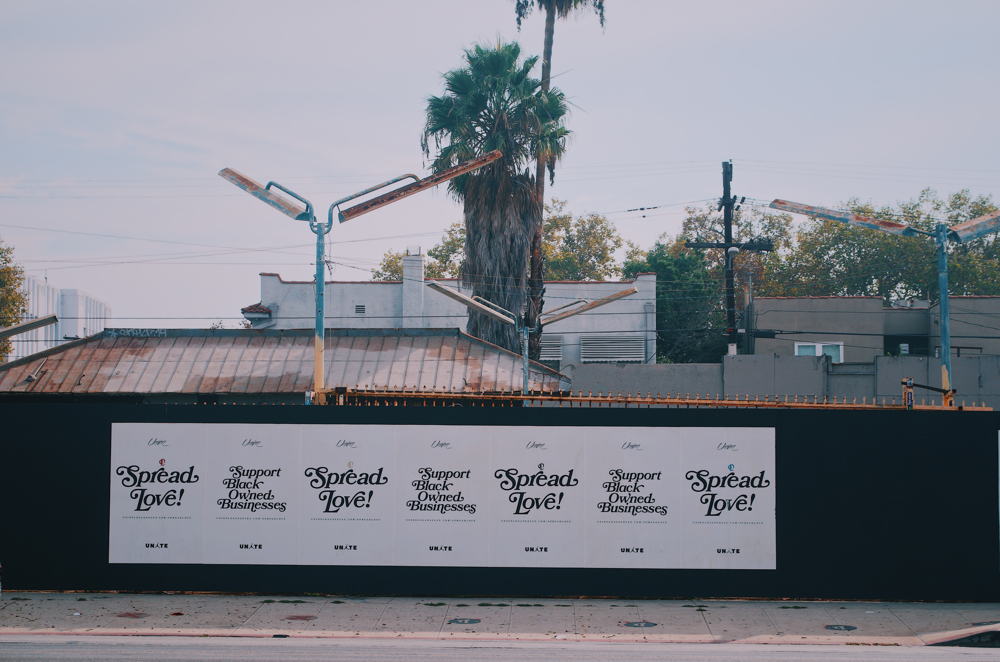
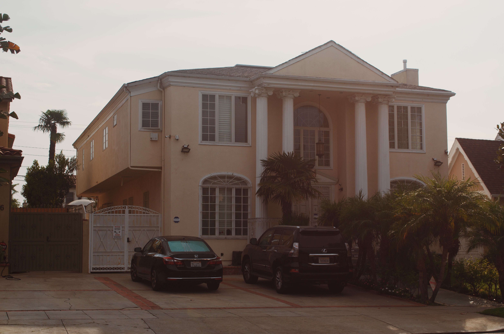

The Fairfax District

Walking to the Synagogue

Home #156

Fairfax Palm Trees
Fairfax History
Upon my arrival into the Fairfax District, the first thing that stood out to me was the prominent Orthodox Jewish population. A look into the history of the Fairfax District reveals why that is. The first group of people who inhabited the Fairfax District were the Tongva (a group of Native Americans living in the Los Angeles area). However, by the 1920s, the white population took over. Most areas of Los Angeles were segregated and homes were only owned by the white. By the 1940s and prior to World War II, some Jewish families migrated to the Fairfax District together. They aimed to establish a community in this area and began by building cultural delis, restaurants, kosher butcher shops, bakeries, and more. Following World War II, Holocaust survivors all moved to the Fairfax neighborhood. The number of Jewish synagogues increased and the area became primarily dominated by the Jewish. In 1987, an 18 foot statue was placed on Fairfax Avenue in order to honor Raoul Wallenberg, a diplomat who had saved thousands of Jews from being deported to Nazi death camps. The area became a supportive and welcoming environment for Jewish families and communities.

Neighborhood Cafe

Father and Son

Home #148
On a walk around the neighborhood, I spoke with a father and his two sons who were on their way to the synagogue. Talking with the father, I learned about the importance of community and family for the Jewish population. The father shared about why he chose to live here and how he feels a sense of belonging in this area. He is happy that his kids can grow up in an environment where they are surrounded by schools, restaurants, stores, and museums that represent their culture. It is a safe, loving community to live in.
Fairfax Today
Today, it is a 3.2 square mile neighborhood that is bordered by Wilshire Boulevard, Melrose, and Beverely Grove in the city of West Hollywood. According to the most recent U.S. Census, the Fairfax District has a population of about 12,490 people and the highest percentage of Orthodox Jews in all of Los Angeles. It is most known for its proximity to The Grove shopping center, the CBS TV broadcasting center, the LA Museum of the Holocaust, as well as various restaurants and shops.

Spread Love!

Homeless Tents
